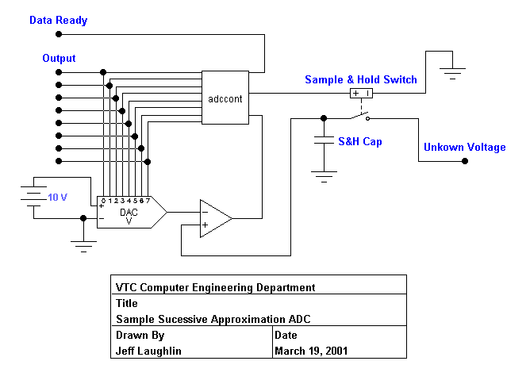
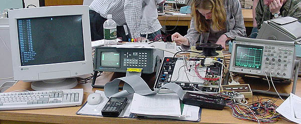
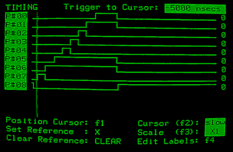

By Jeff Laughlin, n1ywb@amsat.org
For the rest of this document, when I refer to an ADC, I will by default be referring to a successive approximation type ADC.
For the sake of simplicity, I will do these examples with a 4 bit ADC, with a peak scale of 15 volts.
| Step | Unknown V | DAC Input Bits | DAC Output V | comparator Output Bit |
|---|---|---|---|---|
| 1 | 10 Volts | 1000 | 8 Volts | 0, so keep this bit set |
| 2 | 10 Volts | 1100 | 12 Volts | 1, so clear this bit |
| 3 | 10 Volts | 1010 | 10 Volts | 0, keep |
| 4 | 10 Volts | 1011 | 11 Volts | 1, clear |
| Output | 10 Volts | 1010 | 10 Volts | Signal that the output is ready |
| Step | Unknown V | DAC Input Bits | DAC Output V | comparator Output Bit |
|---|---|---|---|---|
| 1 | 13 Volts | 1000 | 8 Volts | 0, so keep this bit set |
| 2 | 13 Volts | 1100 | 12 Volts | 0, so keep this bit |
| 3 | 13 Volts | 1110 | 14 Volts | 1, so clear |
| 4 | 13 Volts | 1101 | 13 Volts | 0, so keep |
| Output | 13 Volts | 1101 | 13 Volts | Signal that the output is ready |
| Step | Unknown V | DAC Input Bits | DAC Output V | comparator Output Bit |
|---|---|---|---|---|
| 1 | 7 Volts | 1000 | 8 Volts | 1, clear |
| 2 | 7 Volts | 0100 | 4 Volts | 0, keep |
| 3 | 7 Volts | 0110 | 6 Volts | 0, keep |
| 4 | 7 Volts | 0111 | 7 Volts | 0, keep |
| Output | 7 Volts | 0111 | 7 Volts | Signal that the output is ready |
This should give you a good idea of the process the DAC uses to arrive at an output value.
The following schematic is an example of a minimal ADC.

There is one part of this schematic that we haven't discussed, and that is the sample & hold circuitry. When the analog to digital conversion takes place, the DAC output is compared to the voltage across the S&H capacitor rather than comparing the output of the DAC to the input voltage directly. This isolates the DAC from the input voltage, and prevents the conversion process from getting messed up if the input voltage swings widely. The ADC controller signals the switch to close for a predetermined amount of time to allow the cap to charge up to the input voltage. It then opens the switch, and begins the ADC process. Although the cap does discharge very slightly during the ADC process, it is negligible, due to the comparator's very high input impedance. The 10v source is simply a reference for the DAC. In this case, it's output will vary between 0 and 10 volts, thus limiting the measurable input voltage range to 0 to 10 volts. By changing the reference voltage on the DAC, the effective input voltage range can also be changed.
The Logic Controller
The logic controller is best described by this snippit of C code, which uses a PC as the logic controller and the parallel port as the interface to the ADC circuit.
#include <conio.h>
#define BASEPORT 0x378
#define DATA BASEPORT
#define STATUS BASEPORT+0x1
#define CONTROL BASEPORT+0x2
#define SAMPLEBIT 0x04
#define INPUTBIT 0x08
/* This function takes a delay factor for the sample process, for */
/* the hold, and for the time between bit shifts. It performs the */
/* logic in the ADC conversion, using the PC parallel port as an */
/* interface to the circuitry. */
unsigned short int ad_convert( int sample_d, int hold_d, int conv_d )
{
unsigned short int d = 0x00; /* This var stores the current test value, */
/* and eventually the final output. */
unsigned short int mask = 0x80; /* The mask stores the current test bit. */
/* It is initialized to 1000 0000, which */
/* sets the MSB only. */
/* Set the DAC bits to 0, and set the sample bit. */
_outp ( BASEPORT, d );
_outp ( CONTROL, SAMPLEBIT );
/* Delay while the voltage is sampled. */
Sleep( sample_d );
/* Clear the sample bit. */
_outp ( CONTROL, 0xFF ^ SAMPLEBIT );
/* Wait while the comparator slews up to the sample voltage and DAC */
/* output. */
Sleep( hold_d );
/* Now perform the actual ADC conversion. */
while ( mask > 0x00 ) /* When the set bit in mask is shifted off the */
/* right side, mask will be 0 and the conversion */
/* will be complete. */
{
/* XORing d with the mask sets the current test bit in d. */
d ^= mask;
_outp ( BASEPORT, d );
/* Wait while the DAC slews, and while the comparator slews. */
Sleep( conv_d );
/* Check the output of the comparator. If it is 0, then the DAC */
/* voltage is higher than the sample voltage, and the bit must be */
/* cleared. Otherwise, leave it alone. */
if ( (INPUTBIT & _inp( STATUS )) == 0 )
{
/* The tested bit is cleared by XORing d with mask again. */
d ^= mask;
}
/* Bit shift mask once to the right. This changes the set bit to the */
/* next lower significance bit. */
mask = mask >> 1;
}
/* d now contains our final value. */
return d;
}

One of the most infamous labs in the VTC Computer System Components and Interfaces EL-203 course is the Successive Approximation ADC lab. In this lab we essentially construct the circuit above, except that we use a PC and the parallel port as the ADC Logic controller. Here is some media from that lab.
Click here to see a close up of the circuit in action.
Click on the image above to see an animation of the DAC waveform. This is the output from the DAC for an input voltage of about 3.8 volts. The change in the output voltage as the controller sets and clears the bits is clearly visible. Because the ADC is so precise, it is difficult to see them all, but you can count about 9 equally sized time steps in the waveform. 8 are for the conversion, and the final step is for the output. You will notice that the scope is operating at a timebase of 50 microseconds per division. The whole ADC process takes only 350 microseconds.

This is the input to the DAC, which of course is also the output from the ADC. CLEARLY visible are the bits as they are set and cleared. The bottom most waveform, #08, is the signal to the sample & hold switch. #07 is the most significant bit, and #00 is the least significant bit. Notice how each bit from the MSB to the LSB is set, and then some are cleared and some are not.
If you are interested in the lab equipment I used, click here to see the digital oscilloscope, and click here to see the logic analyzer.
Return to the ECET Department page.
This page is copyright 2001 Jeff Laughlin
I hereby give the VTC Computer Engineering Department permission to use this page and the media herein as they see fit. This page and the associated media may not be distributed in any form, modified or unmodified, beyond the VTC Computer Engineering Department without my express permission.
Comments, corrections, criticisms, rants & raves & flames can be directed to n1ywb@amsat.org
Last modified on Monday, March 20th, 2001
{kind=link}
{kind=link}
{kind=link}